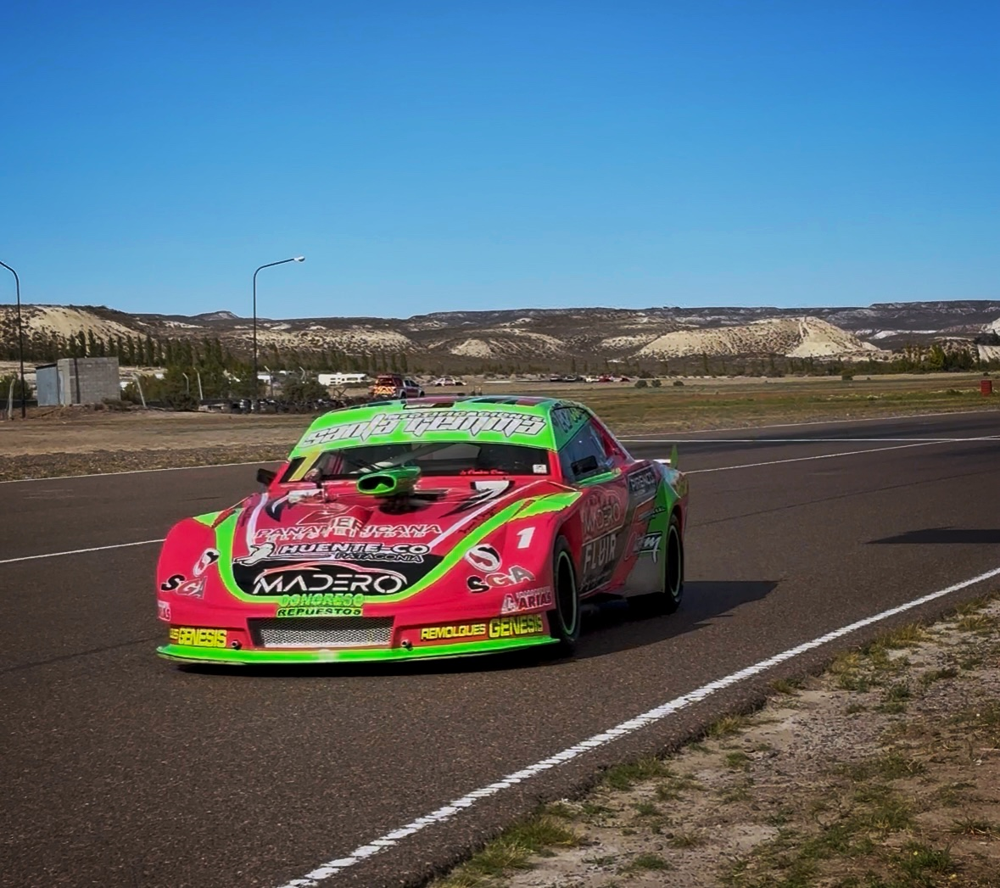

El Zonal puso primera en Mar y Valle

El Automovilismo Zonal puso en marcha la temporada 2026 con su primera fecha en el autódromo Mar y Valle de Trelew, en un fin de semana que reunió a las categorías TP 1100, TP Gol 1.6, Turismo Carretera Patagónico, Turismo Carretera Austral y Monomarca R12.
Luego del receso, pilotos y equipos volvieron a encontrarse en pista para comenzar un nuevo campeonato que dejó carreras intensas, regresos destacados y varios protagonistas que comenzaron el año sumando fuerte.
Turismo Carretera Patagónico
El gran dominador del fin de semana fue Emiliano López, quien se quedó con la clasificación, la serie única y también con la final, mostrando un rendimiento contundente desde el inicio de la actividad.
El segundo lugar quedó para Emanuel Abdala, quien tuvo un gran desempeño durante todo el fin de semana al subirse al auto de Truppiano. El podio lo completó Nazareno López, en su regreso a la categoría.
Entre los destacados también apareció Axel Oliver, que fue protagonista durante las competencias. El fin de semana además dejó algunos roces en pista, entre ellos incidentes entre los autos de Laudonio y Sosa durante las competencias.
TP 1100
El TP 1100 volvió a presentar un parque numeroso y carreras muy disputadas. En la final, el triunfo quedó en manos de Martín Jones, seguido por Santiago Villar y Pablo Arabia, quienes completaron los primeros puestos en una carrera muy ajustada.
Las series clasificatorias habían tenido como ganadores a Pablo Arabia, Martín Jones y Martín Muñoz, anticipando un domingo con varios protagonistas en la pelea por la victoria.
Comienzo de campeonato
De esta manera, el Automovilismo Zonal dio el puntapié inicial a la temporada 2026 en uno de los escenarios tradicionales del calendario regional, con un fin de semana que volvió a reunir competencia, público y el trabajo de cada uno de los equipos que sostienen la actividad.
La próxima fecha del campeonato se disputará el 10, 11 y 12 de abril en el autódromo General San Martín de Comodoro Rivadavia, donde continuará la actividad del campeonato.